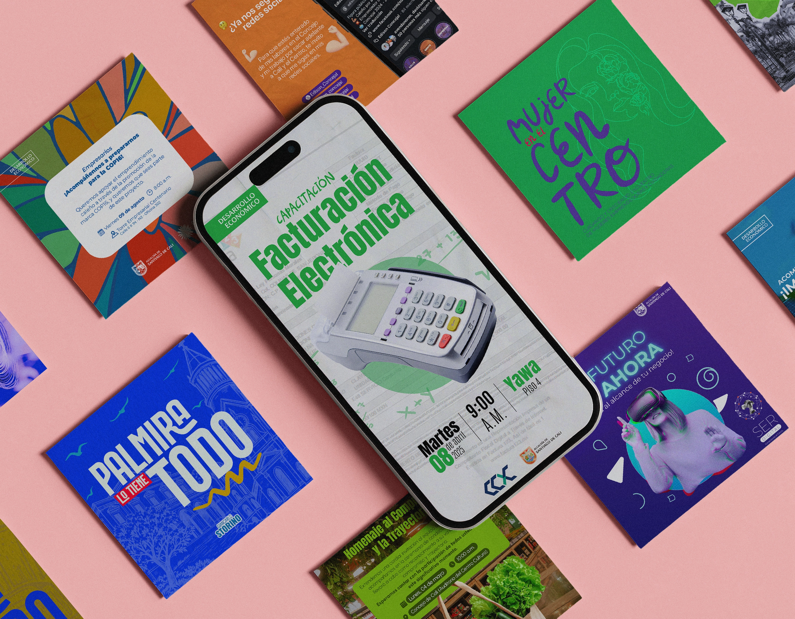

All work
Social media · Various
Social Media
Post systems for public institutions, a dental clinic, an agency, a vet and a food brand.
- Discipline
- Social media
- Client
- Seven brands and institutions
- Year
- Various
- Role
- Content design, campaign graphics
- Tools


Brief
Each account needed a recognizable look that could carry a steady stream of announcements, tips and campaigns without feeling repetitive.
Approach
A consistent system per brand (type, color, photo treatment and layout) varied post by post, so each feed reads as one voice.
Result
For the Secretariat of Economic Development, I led a five person creative team, and the account grew from about 2,000 to more than 20,000 followers with campaigns like Más Empleos Cali.
Cali City Hall
01 / 12


Edison Giraldo
01 / 12


Municipal Youth Council
01 / 12


Andina Dental
01 / 12


La Colina Estudio
01 / 12


Pet’s Services
01 / 12


Pulpas Rico
01 / 12